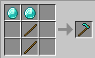

| Wytwarzanie |
| Naturalne generowanie |
| Oranie |
| Wytwarzanie | Wejście > Wyjście |
| 2 patyki + 2 deski lub 2 bruk lub 2 sztabki żelaza lub 2 sztabki złota lub 2 diamenty |
 |
Diamentową motykę można znaleźć w skrzyni w Leśnym dworze, zawsze pojedynczo (21.8% szansy w Java Edition i 21.5% szansy w Bedrock Edition). Pojedyncza złota motyka występuje w skrzyniach w ruinach portalu (19,4% szansy) i ruinach bastionu (13,3% szansy).
Motykę możemy użyć na blokach ziemi, trawy lub bielicy aby zmienić je w pole uprawne. użycie motyki na twardej ziemi zmienia ją w zwykłą ziemię. Zamiana 1 bloku w pole uprawne zużywa 1 punkt wytrzymałości. Blok zamieniany jest w pole uprawne natychmiastowo.